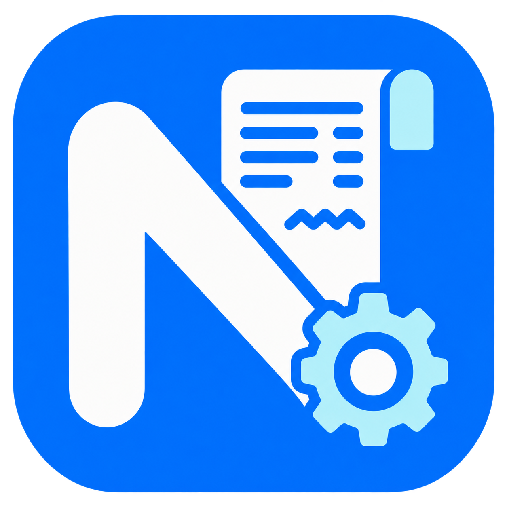

Công cụ kỹ thuật viên
Khôi phục tài khoản an toàn, không xem mật khẩu
Xác thực kỹ thuật viên
Nhập khóa kỹ thuật viên đã được cấu hình trên máy hỗ trợ.
Mã reset dùng một lần
| Họ tên | Tài khoản | Vai trò | Trạng thái | Ngày tạo |
|---|